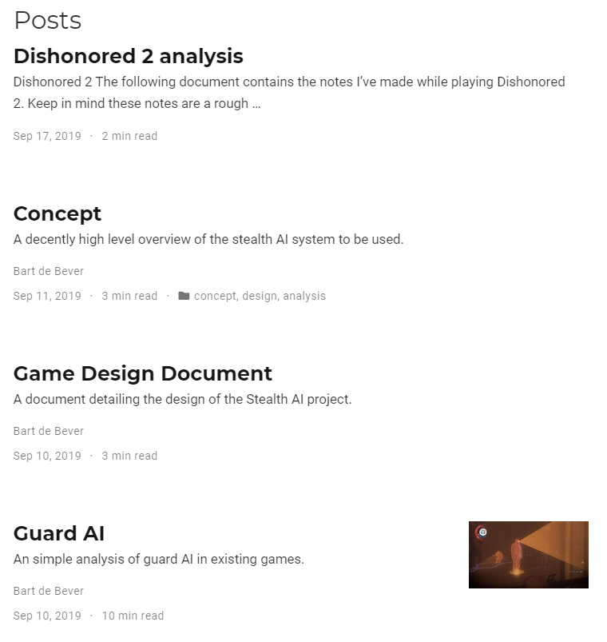
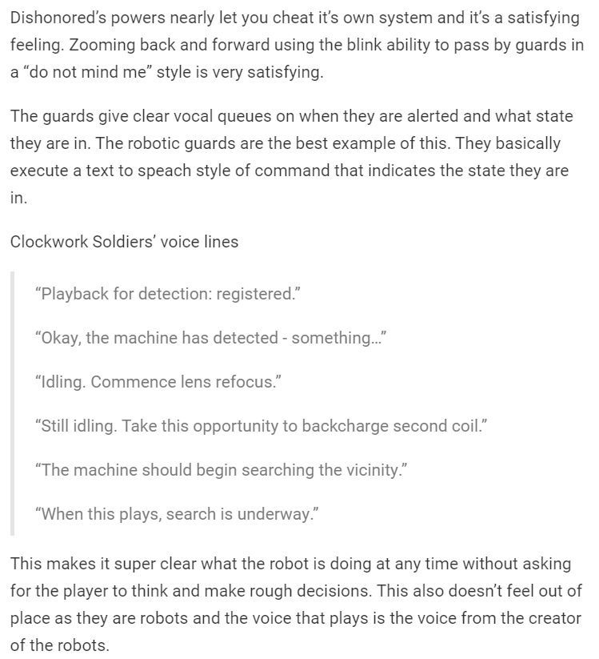
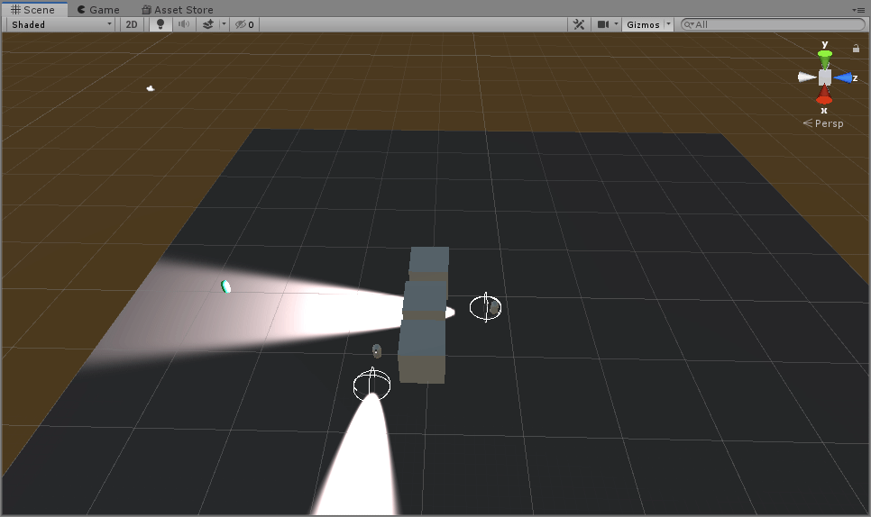
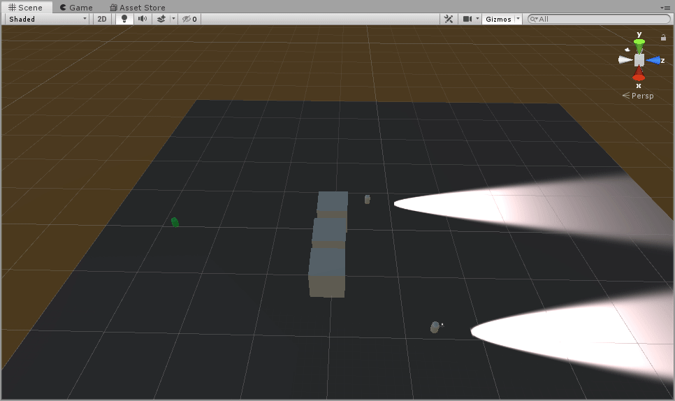

class: center, middle # Game Design Personal Project ## Presentation for 24/9/2019 ### Stealth AI by Bart de Bever --- # Agenda 1. Introduction and Design challenge 2. Portfolio 3. Dishonored 2 Analysis 4. Game design 5. Unity practise 6. Next steps 7. Reflection --- # Introduction and Design challenge **Stealth focused asset pack that can be implemented into other games easily.** *How do I design and make a reusable pack of assets*: - Is the documentation sufficient? - Can developers implement their own systems into the assets? - Are the assets fun for the player? - Is the difficulty adjustable enough? This is explained further in the *Concept* document in the portfolio. <hr> Final product: - Asset pack with documentation - (Basic) game using the asset pack. - Playtests result with users. - Test if developers understand the asset pack. --- # Portfolio  - Markdown based documents. - Easy interlinking. - Learning tool for personal use. --- # Dishonored 2 Analysis  #### Concluded in information of the following concepts: - General gameplay feel. - Reward system. - Guard give-aways. - The line of realism. --- # Game design - Basic gameplay desing and setting. - Primary, secondary and tertiary gameplay loops. - Movement and actions. --- # Unity practise 1 ## Create a guard with a simple movement pattern.  --- # Unity practise 2 ## Make an automated "cinematic" camera shot.  --- # Next steps **Research and design how developers and attach their components to my components.** - Sets **goals** for **Design Challenge** - Existing product analysis - Design in an UML (like) diagram - Peer review with Unity Dev **Unity challenges** - Movement system with keyboard and controller - Use some stock sounds as assets **Portfolio** - Work new products into the portfolio. - Different game analysis. - Paper prototype and guard predictable path document. --- # Reflection - \+ Gained experience with Unity, Remarked and Hugo. - \+ Created the operators and put the concept in a simple sentence. - \- Time loss due to portfolio setup and general porting. - \- Not up to planning